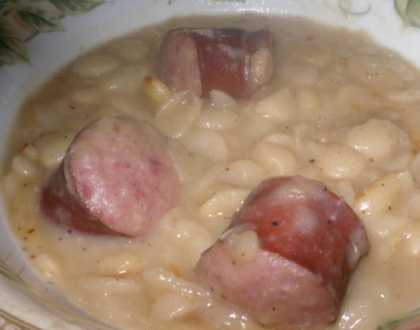

Louisiana Style Crock Pot Cajun Lima Beans

Description
This is lima beans with sausage. Lima beans get a bad wrap because people don't use meat to flavor them.
You can substitute the meat for something else if you don't like sausage. My mom likes to use pickled ham.
I recommend using your favorite hot or cajun sausage.
Ingredients:
- 16 oz pack of dry large lima beans
- 1 large onion
- 1 bell pepper
- 1 clove of garlic
- 1 lb hot sausage
- 1/2 teaspoon of basil
- 1/2 teaspoon of oregano
- 1-2 tablespoons of butter
- Tony's/salt and pepper to taste
Cooking Instructions:
- Dice all vegetables.
- Put all ingredients into the crock pot.
- Fill with water until water level is 1 inch above ingredients.
- Cook on high for 4 to 6 hours.
- Turn to low and remove top for 1 to 3 hours depending on desired thickness.
- Serve over rice and enjoy!